Introduction to Routing in Oracle Digital Assistant
Tutorial by Don McInnes, Oracle
March 2019, Oracle Digital Assistant version 19.1.3
Before You Begin
In this one-hour tutorial you will use three pre-defined skills to create your own personal digital assistant (DA) on the Oracle Digital Assistant platform (ODA). You will also get hands-on experience tuning your digital assistant’s conversational capabilities and interaction style.
Background
The purpose of this lab is to give you hands-on experience adding skills to a DA; configuring routing and “smart dialogs”; and testing a DA to ensure that it’s performing as expected.
In addition, you will learn strategies for dealing with various types of user inputs, including explicit and implicit invocation of skills, requests for help and handling non-sequitur utterances.
What Do You Need?
Access to an Oracle Digital Assistant instance (at least 19.1.3).
We’ll start by importing the three skills that were provided in the zip file referenced above (Your_Initials_Finance_For_DA_Starter, Your_Initials_Pizza_For_DA_Starter and Your_Initials_Retail_For_DA_Starter).
And since you may not be the only one using your ODA instance, we’ll create a unique clone of each for your use.
Complete the following steps:
Download the file containing each of the skill zip files and unzip it.
You should see three zip files, one for each skill that you'll be importing.
With the Oracle Digital Assistant UI open in your browser, click to open the side menu.
Click Development and select Skills.
Click Import Skill in the upper right and select the zip file for one of the three skills.
If you receive an error message saying that the bot already exists, it means that someone has already imported the skills and you can skip to the next step.
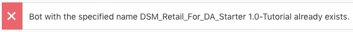
Return to the Skills landing page by clicking Skills in the left navigation.
Using the same steps, import the other two skills.
Within the tile for the <Your_Initials>_Retail_For_DA_Starter, click and select Clone.
Name the clone <YourInitials>_ Retail_ Skill. (For example: DSM_ Retail_Starter.)
Repeat the cloning process for the <YourInitials>_Finance_Skill and <YourInitials>_Pizza_Skill.
Train Your Skills
The next step in the process is to train each of your cloned skills. (Cloned skills are not automatically trained.)
Open each skill and click in the upper right corner.
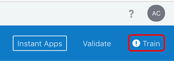
Select the Trainer Ht model and click Submit.
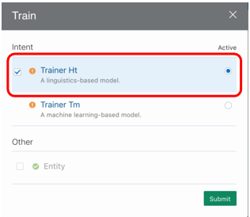
Repeat this process for each of your cloned skills.
Publish Your Skills
Finally, before skills can be added to a digital assistant, they must be published. Publishing skills “freezes” them in their current state. No changes can be made to that version of a skill once it has been published.
Return to the Skills landing page by clicking Skills in the left navigation.
For each of the skills that you just trained, click and select Publish.
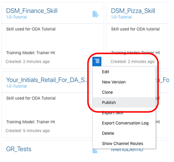
Create Your Digital Assistant and Add Skills
To create a functioning digital assistant, you need to create a digital assistant and then add skills to it.
Create a Digital Assistant
In the left navigation, click Development and select Digital Assistants.
Click + New Digital Assistant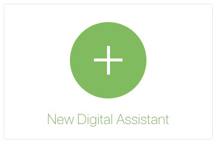
In the Create Digital Assistant dialog, for Name and Display Name, enter <YourInitials>_ODA_Pizza_Finance_Retail.
Optionally, fill in the Description field.
Click Create.
Review Base Digital Assistant Features
You’ve now created a “container” digital assistant. As noted, the DA does already have some capabilities, even though it’s still just a container with no skills added to it. Let’s see what some of those capabilities are.
Find the tester icon () in the bottom of the DA's left navigation bar and click it.
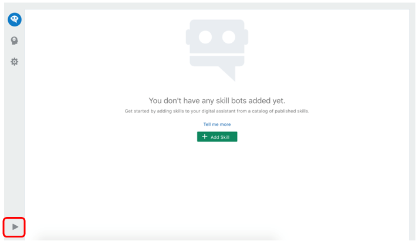
In the tester's Message field, type hi, press Enter, and note the DA's greeting.
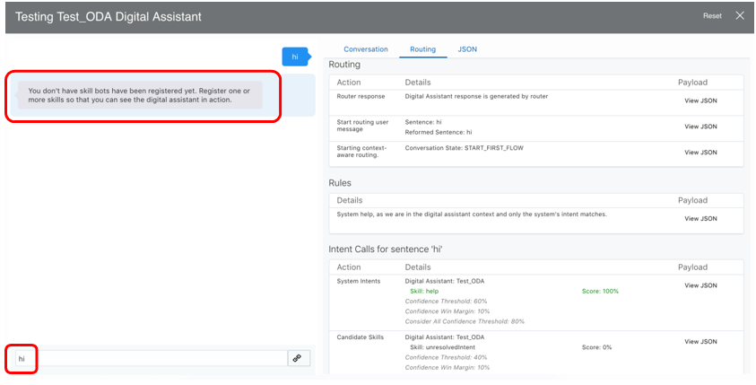
In the right pane, select the Routing tab and you’ll see that your DA does have some intelligence.
What you are seeing is the first example of what are known as “smart dialogs” – built-in DA capabilities that improve conversational interactions and reduce development effort.
Add Your Published skills to Your Digital Assistant
Before your DA can do anything useful (like help with ordering a pizza or checking a bank balance) we must add the individual skills that have been specifically developed to accomplish these tasks (the skills that you cloned, trained and published earlier).
If the tester is still open, close it.
In your DA, click Add Skill ().
Find each of your skills (that we cloned and trained earlier) and add them via the icon. 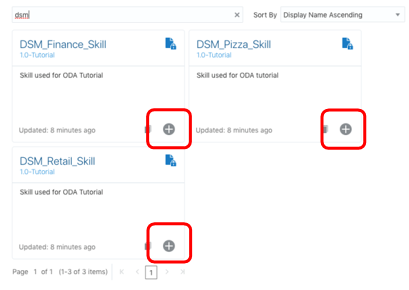
Tip: You can use the Filter field to help find your skills.
Close the Skill Catalog. (The Close button is on the upper right side of the page.)
Retrain the DA by clicking and clicking Submit.
With skills added to your DA, it is now “smarter”. If you try out your DA at this point, you’ll find that it already “understands” the skills that have been added to it.
Click , click Reset, type help into the Message field, and press Enter.
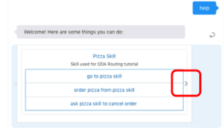
Notice that there is now a carousel that lists each of the available skills (the ones that you just added). You can click to cycle through the different skills.
This is another glimpse of the automated capabilities (“smart dialogs”) of the Oracle Digital Assistant - the fact that a new user is helped to discover the various abilities that the DA supports.
Explicit Routing, Implicit Routing and Configuring Skills
In general, there are two different ways to begin a conversation with a DA. The first is to The second way is to
Explicitly include the name of the skill to which you are referring.
Start a conversation with an utterance that implies a certain desire, and let the DA determine which skill is best suited to handle the input.
“Explicit invocation” tends to be quicker and require fewer conversational “turns”, since the user is telling the DA what skill they want to access. On the other hand, explicit invocation also requires some prior knowledge of what the DA can do.
Explicit Routing Example
Click , click Reset, type ask retail skill what's my balance into the Message field, and press Enter.
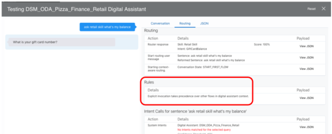
Notice in the Rules how explicit invocation takes precedence over other potential skill matches (even though those skills had very high confidence scores).
Implicit Routing Example
In the tester, click Reset, type what's my balance into the Message field, and press Enter.
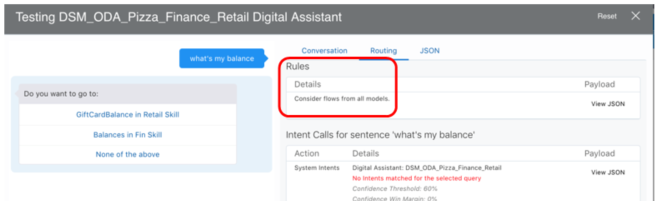
Notice how the Rules section in the Routing tab has changed. Because there was no explicit direction for which skill should handle the utterance, the DA considered all possible candidate skills.
In this case there are multiple skills that might be able to respond (i.e., have high enough confidence levels), so the DA automatically presented another “smart dialog” for the user to clarify their intentions.
Set Invocation Name and Create Invocation Samples
You may have noticed that the name of the “Finance” skill is a bit odd. To remedy that and some other things, we need to add some additional configuration options that were not part of the pre-built skill that you imported. We will update the:
Invocation, which is the name or phrase which a user can input to explicitly access the skill.
Example Utterances, which are the clickable items that show up in the smart dialogs and trigger specific flows within the skills.
Close the Tester.
In your DA, select .
Select the <Your_Initials>_Finance_Skill.
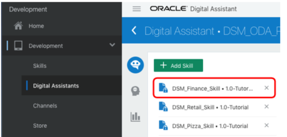
Scroll down to the Interaction Model section.
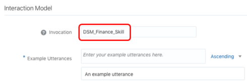
Change the Invocation value to CashBank.
Enter the following phrases in the Example Utterances field:
ask CashBank to check my balance
go to CashBank
send money using CashBank
Click , click Reset, type Ask cashbank to check my balance into the Message field, and press Enter.
Note how the DA took you directly to the skill that you’ve now named “Cashbank”.
You’ve now created a complete digital assistant that is capable of recognizing explicit calls to skills and disambiguating calls to skills when it’s not sure how to resolve an input.
Tuning Confidence Thresholds and Smart Dialogs
Oftentimes we’ll want conversational behavior for our DA to vary by use case. For example, whether the DA confirms its understanding before proceeding will depend on the task at hand.
The Importance of Context
The “context” of a conversation makes a significant difference in conversational routing. The first utterance with a digital assistant is treated as being “in the context of the DA” (as opposed to being in the context of a specific skill for later utterances).
Click , click Reset, type can you cancel my pizza order into the Message field, and press Enter.
Your results should look like the image below:
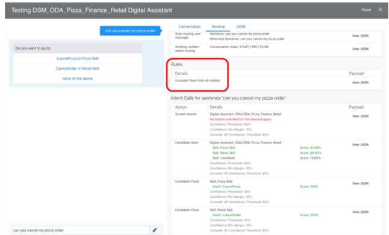
Note how the DA asked the user to confirm (via another Smart Dialog) which skill they wanted to address the request to cancel.
Now let’s take a look at how the DA treats the exact same utterance when it is in the context of the pizza skill.
Click , click Reset, type go to Pizza skill into the Message field, and press Enter.
Now type in the phrase can you cancel my pizza order.
Your results should look like this:
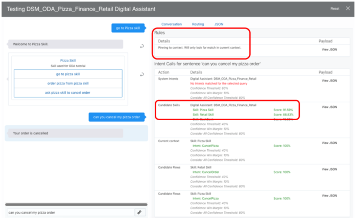
Notice that this time the Candidate Flow (intent) CancelPizza was invoked by the routing engine, even though other skills were above the threshold values. This is because extra weight is given to results within the current skill.
Set Confidence Thresholds to Change Routing Behavior
Click , click Reset, type Can you cancel my pie into the Message field, and press Enter.
Your results should look like this:
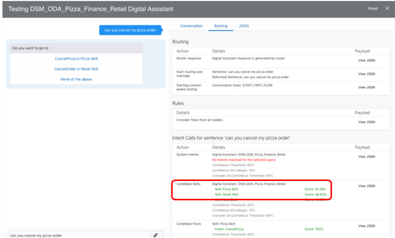
Let’s change the threshold setting for candidate skills to see what effect this has on the conversation.
Close the tester.
Click and select the Configurations tab.
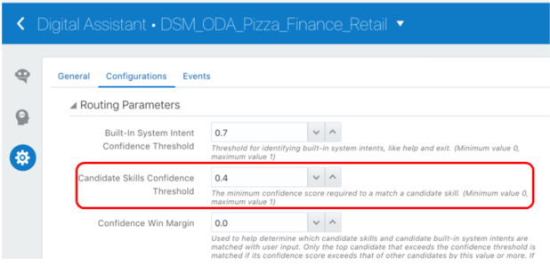
Change the Candidate Skills Confidence Threshold value to 0.9.
Click , click Reset, type Can you cancel my pie into the Message field, and press Enter.
This time you should see very different results:
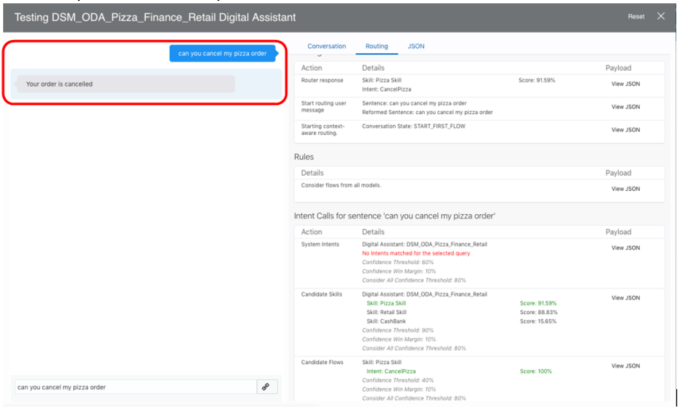
Notice now how the DA went immediately to the order cancellation in the pizza skill.
IMPORTANT: Change the Candidate Skills Confidence Threshold back to 0.4.
Now that you can see the impact that this setting has, it's best to return its value to a more realistic level.
Implementing and Configuring Help
A key element of good Conversational Design relates to the discoverability of your DA’s capabilities. Allowing a user to quickly and easily (and in their own language, e.g., “what can you do for me?”) understand the scope of your DA is critical for a good user experience.
Importance of Conversational Context
As previously noted, the conversational-context of a “help” request matters. For example, the DA will provide different responses depending on whether you are in the context of a particular skill, or the DA in general.
DA-level Help vs Skill-level Help
Let’s examine the difference between asking for help when engaged with the DA vs. when within a skill.
Click , click Reset, type what can you do for me into the Message field, and press Enter.
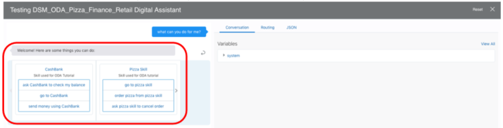
because this is the first utterance of the conversation, you’re interacting with the digital assistant. The DA is showing you help for all of its skills.
Now enter I want to send money.
Now enter what can you do for me?.
Your results should look like this:
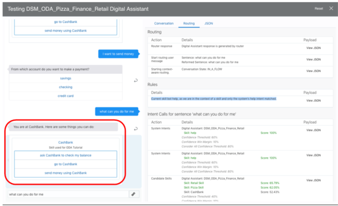
This time the same input (“what can you do for me”) led to a different outcome (skill-specific help). This is because we are now engaged with the CashBank skill.
Configuring Help States and Recognition
Individual skills may or may not have a specific “state” (aka, “flow”) that is defined for help requests. You can see how help is configured for a given skill by completing the following steps.
If the side menu isn't already open, click to open it.
Click Development and select Skills.
Select any available skill.
In the left navigation for the skill, click and select the Digital Assistant tab.
You should see something like this:
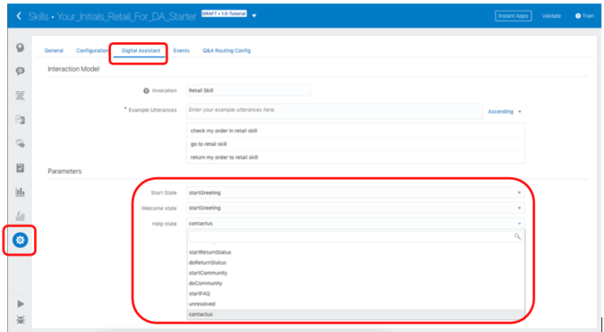
Note that if you view a published skill, there will be no dropdown list because the skill is locked.
Configuring skill-specific help is beyond the scope of this lab. However, we will look at configuring help recognition (the phrases the trigger help) at the DA-level.
If the side menu isn't already open, click to open it.
Click Development and select Digital Assistants.
Select <YourInitials>_ODA_Pizza_Finance_Retail.
In DA's left navigation, select .
Select the Help intent.
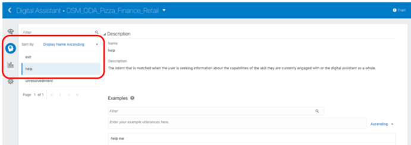
Scroll to the Examples section and add the example I wanna know more.
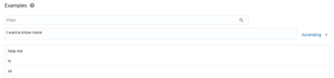
Retrain the DA by clicking and clicking Submit.
Click , click Reset, type I wanna know more into the Message field, and press Enter.
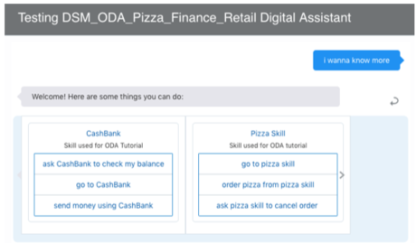
Note how this new phrase now triggers help at the DA-level. And of course, the new phrase will work at the skill-level too.
Click go to Cashbank.
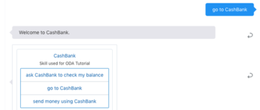
Enter I wanna know more.
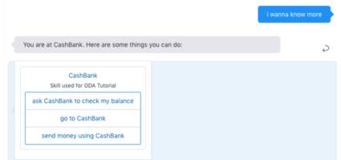
Non Sequiturs and Conversational Confirmation
In the context of conversational interactions with a DA, a non sequitur is a statement that doesn’t make sense within the flow of the current conversation.
Oracle Digital Assistant has built-in features to simplify the handling of non sequiturs.
Conversational Memory and Non Sequiturs
Click , click Reset, type I want to order pizza into the Message field, and press Enter.
Now enter how much money do I have in checking?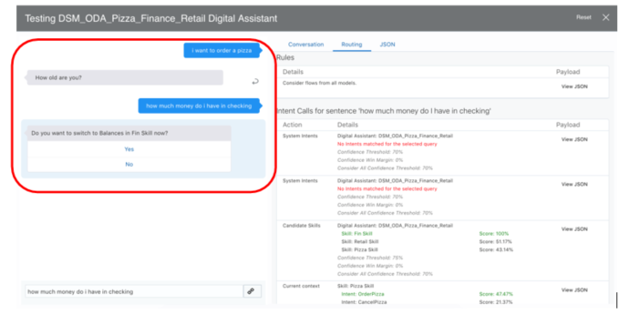
You can see that the DA asked to confirm that you want to switch from the pizza ordering process.
Select Yes to confirm that you want to see your balance.
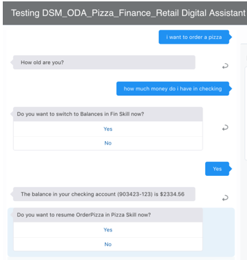
Note that the DA automatically switched to the CashBank skill and answered the balance inquiry.
The DA also “remembered” that you were in the process of ordering a pizza! It then asks if you want to go back.
Configuring Confirmation Prompts
The default behavior of Oracle Digital Assistant is to ask for explicit confirmation before exiting a flow.
It may be the case, however, that a conversational designer decides that a better approach is to allow a user to switch flows without confirmation.
Click and select the Configurations tab.
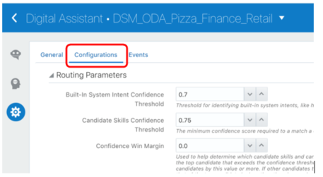
Scroll down to the Interrupt Prompt Confidence Threshold property and set its value to 0.80.
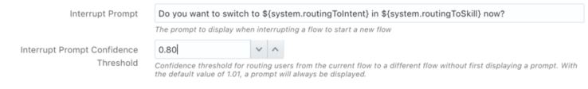
Click , click Reset, type I want to order a pizza into the Message field, and press Enter.
Now enter how much money do I have in checking.
Your interaction should look like this:
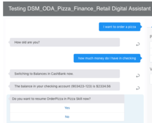
Note that this time, the DA did not ask you to confirm if you wanted to switch to the CashBank skill. It just did it.
Also note that, same as before, the DA offers you the option to resume the prior pizza order in progress.
You have now seen some example of the ODA platform’s capabilities insofar as non sequitur interactions and “conversational configuration”. This should start to give you a sense of options available for Conversational Designers to tune DA interactions.
Exit Strategies
By now you’re familiar with ODA’s use of “smart dialogs” and the customization options behind them. Similar to non sequitur handling, ODA offers various configuration options for “exiting” flows within the DA and the DA itself.
Click , click Reset, type ask CashBank to check my balance into the Message field, and press Enter.
You will be presented with a card that contains account options.
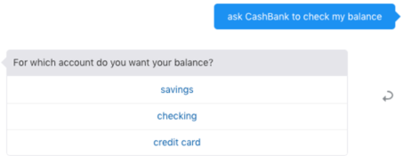
Enter I’m done here.
Note how your DA understands that you want to exit, and it asks if you “really want to quit”.
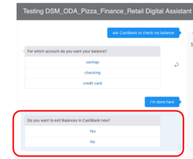
Let’s configure the DA to not request confirmation of an exit request if it’s confident that the user really does want to exit.
Click and select the Configurations tab.
Scroll down until you find the Exit Prompt Confidence Threshold property and set its value to 0.8.
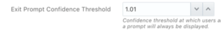
Click , click Reset, type ask CashBank to check my balance into the Message field, and press Enter.
Enter I’m done here.
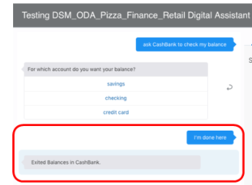
Notice that the conversational interaction was quite different than before. Most notably, there is no exit confirmation dialog.
Configuring “Exit” Recognition
Similar to the configuration of help recognition that we did in section 5, we can configure exit to recognize new phrases as well.
If the side menu isn't already open, click to open it.
Click Development and select Digital Assistants.
Select <YourInitials>_ODA_Pizza_Finance_Retail.
In DA's left navigation, select .
Select the Exit intent.
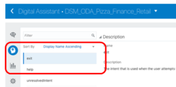
Scroll to the Examples section and add the example I'm outta here.
Retrain the DA by clicking and clicking Submit.
Click , click Reset, type cashbank into the Message field, and press Enter.
Next enter I'm outta here.
Note how this new phrase is now recognized as an exit request.
 Introduction to Routing in Oracle Digital Assistant
Introduction to Routing in Oracle Digital Assistant Before You Begin
Before You Begin Clone, Train and Publish Skills
Clone, Train and Publish Skills to open the side menu.
to open the side menu. and select Clone.
and select Clone. Create Your Digital Assistant and Add Skills
Create Your Digital Assistant and Add Skills ) in the bottom of the DA's left navigation bar and click it.
) in the bottom of the DA's left navigation bar and click it.
 ).
). icon.
icon.  Explicit Routing, Implicit Routing and Configuring Skills
Explicit Routing, Implicit Routing and Configuring Skills .
.

 Tuning Confidence Thresholds and Smart Dialogs
Tuning Confidence Thresholds and Smart Dialogs and select the Configurations tab.
and select the Configurations tab.
 Implementing and Configuring Help
Implementing and Configuring Help .
. Non Sequiturs and Conversational Confirmation
Non Sequiturs and Conversational Confirmation Exit Strategies
Exit Strategies